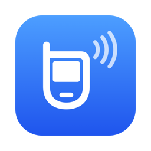
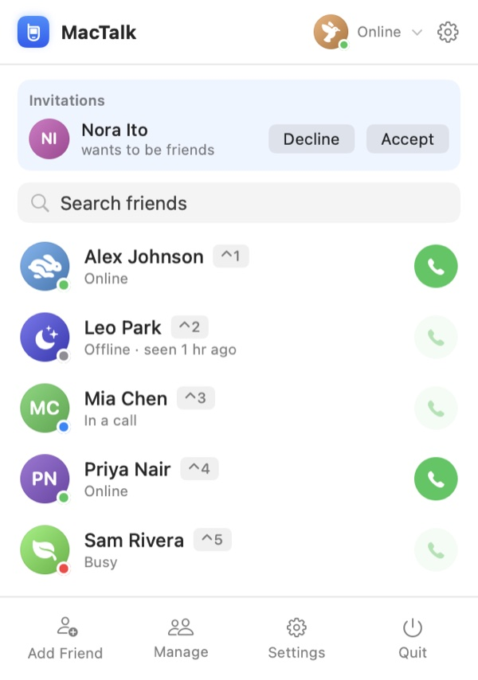
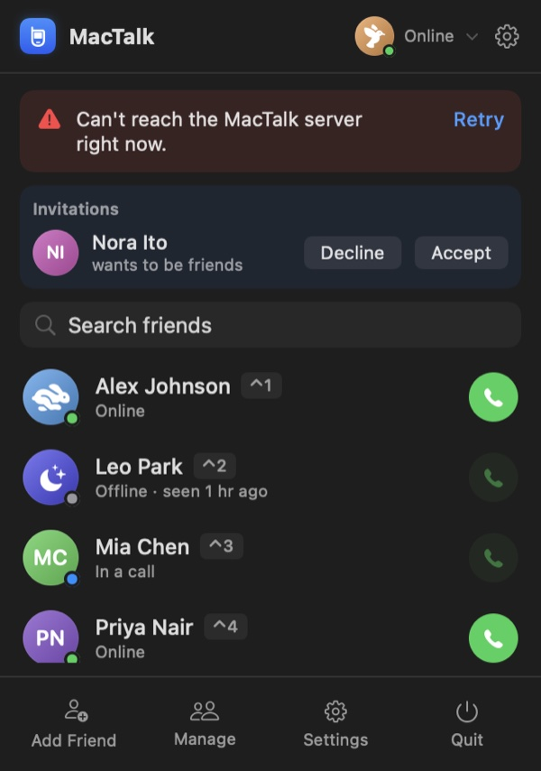
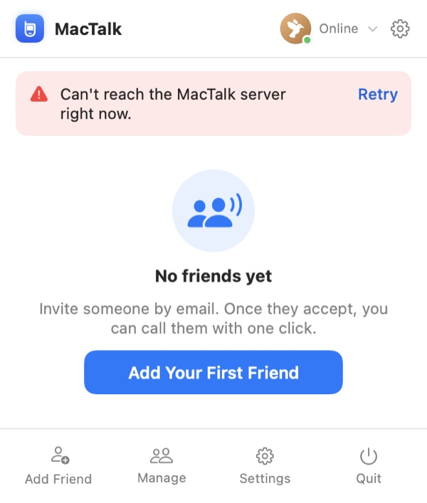
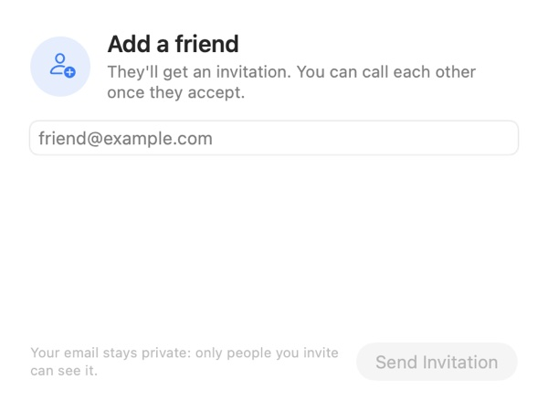
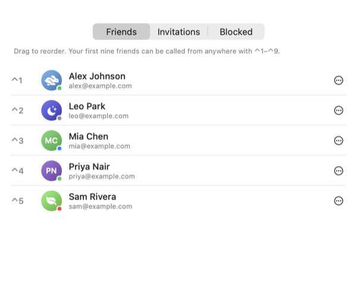

MacTalk
A walkie-talkie for the Mac menu bar. Add friends by email, and once they accept, call them with one click or with ⌃1–⌃9 from any app. On their Mac a call slides in at the bottom-right corner with Accept and Decline, and the conversation runs over encrypted peer-to-peer audio.
Open the DMG and drag MacTalk to Applications. The first launch needs one extra step; see the release note below.
- Lives in the menu bar only, with no Dock icon.
- Friends list with live presence: online, busy, in a call, or offline with when they were last seen.
- One-click calls, and ⌃1–⌃9 speed dial for the first nine friends.
- Friends-only calling, enforced on the server by Row Level Security and SQL functions: nobody can ring you without an accepted invitation.
- Encrypted peer-to-peer audio (WebRTC, DTLS-SRTP) with echo cancellation and noise suppression.
- The microphone stays off until a call is answered.
- Sign in with Google or a one-time email code.
Release note. The build is signed ad hoc and not notarised. The first time, Control-click MacTalk in Applications and choose Open; on macOS 15 or later, if that is not offered, open System Settings › Privacy & Security and choose Open Anyway. The calling service isn't connected in this build yet, so the app opens to a “Configuration needed” screen until it is.
On the desktop
The friends list opens under the menu bar icon; an incoming call appears in the bottom-right corner.

The menu bar panel
Invitations at the top, then friends with their presence and speed-dial key. The call button is only active for friends who can take a call. Scroll sideways for more.



Friends
Invite by email; then drag friends into speed-dial order, and see invitations and blocked people in one place.


Screens are rendered from the app's own SwiftUI views with sample people and data. Built with Swift 6, SwiftUI and AppKit, WebRTC audio and a Supabase backend (Auth, Postgres with Row Level Security, Realtime). Source on GitHub ↗.